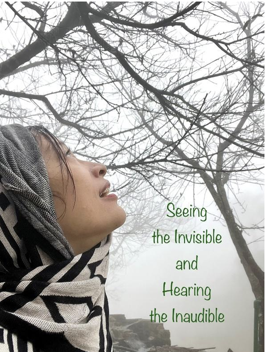

Winter and the Things the Naked Eye Cannot See, the Ordinary Ear Cannot Hear
“Not everything the eyes cannot see is nonexistent, and not everything the ears cannot hear is without a sound. Only when the heart is truly still can we see life in things that seem lifeless, and hear the whispers of spring quietly speaking in the heart of winter.”
Read Full Story
Once upon a time, in a small village nestled on the slopes of a high mountain, winter arrived with icy winds and blankets of white mist covering the hillsides. The old peach trees stood silently, their branches slender and bare, stripped of every leaf. Their trunks were covered in moss and frost, resembling old souls wrapped in the cloak of time.
Amid this wintry landscape, there lived a young woman who often wandered quietly in search of spring. She was not looking for flowers already in bloom. Instead, she gazed intently at the peach branches that seemed to have fallen into a deep sleep. She believed that somewhere beneath their rough, weathered bark, tiny buds were quietly awakening.
Then, one day, she began to hear strange sounds. They were the faint movements of tender shoots stirring, the soft sounds of sleepy yawns, and the gentle whispers of tiny buds calling to one another, nestled in the warmth of their mother's trunks.
No passerby believed her. They said winter brought nothing but bitter cold, and that the trees were fast asleep. But the young woman simply smiled: “Not everything the eyes cannot see is nonexistent, and not everything the ears cannot hear is without a sound. Only when the heart is truly still can we see life in things that seem lifeless, and hear the whispers of spring quietly speaking in the heart of winter.”
For she understood a secret that the mountains and forests had guarded for a thousand years: Life never truly sleeps, even when the world is shrouded in frost and cold. It continues to stir silently, to whisper softly, and to exist in all those things that the naked eye cannot see and the ordinary ear cannot hear.